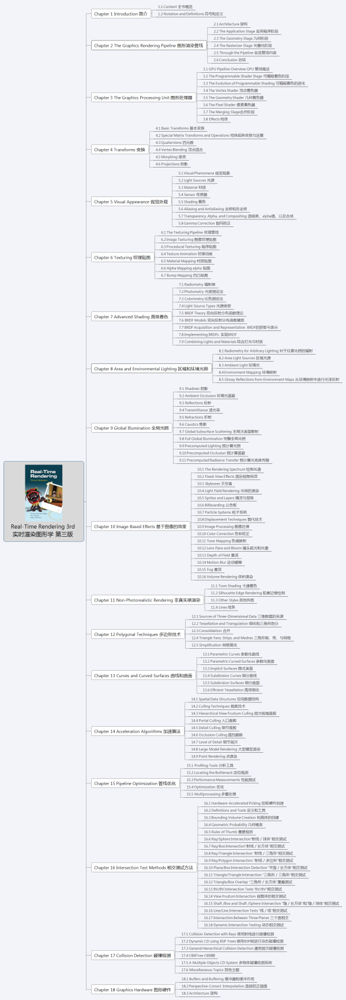
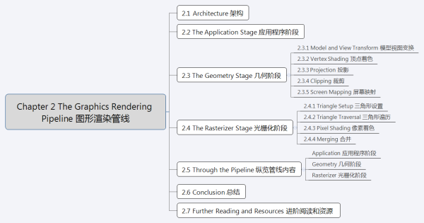
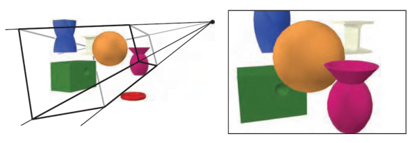

Overview

url: www.realtimerendering.comThe Graphics Rendering Pipeline

核心内容分节提炼
图像渲染管线架构概述 Architecture
渲染管线的主要功能就是决定在给虚拟相机，三维物体，光源，照明模式，以及纹理等诸多条件的情况下，生成或绘制一幅二维图像的过程。对于实时渲染来说，渲染管线就是基础。因此，我们可以说，渲染管线是实时渲染的底层工具。

上图，相机放在棱锥的顶端（四条线段的交汇点），只有可视体内部的图元会被渲染。
在概念上可以将图形渲染管线分为三个阶段：
- 应用程序阶段(The Application Stage)
- 几何阶段(The Geometry Stage)
- 光栅化阶段(The Rasterizer Stage)
绘制管线的基本结构包括3个阶段：应用程序，几何，光栅化。
几个要点：
- 每个阶段本身也可能是一条管线，如图中的几何阶段所示。此外，还可以对有的阶段进行全部或者部分的并行化处理，如图中的光栅化阶段。应用程序阶段虽然是一个单独的过程，但是依然可以对之进行管线化或者并行化处理。
- 最慢的管线阶段决定绘制速度，即图像的更新速度，这种速度一般用FPS表示，也就是帧率。
应用程序阶段（The Application Stage）
- 应用程序阶段一般是图形渲染管线概念上的第一个阶段。应用程序阶段是通过软件方式来实现的阶段，开发者能够对该阶段发生的情况进行完全控制，可以通过改变实现方法来改变实际性能。其他阶段，他们全部或者部分建立在硬件的基础上，因此要改变实现过程会非常困难。
- 正因应用程序阶段是软件方式实现，因此不能像集合和光栅化阶段那样继续分为诺干个子阶段。但为了提高性能，该阶段还是可以在几个并行处理器上同时执行。在CPU设计商，称这种形式为超标量体系(superscalar)结构，因为它可以在同一个阶段同一个时间做不同的几件事情。
- 应用程序阶段通常实现的方法有碰撞检测，加速算法，输入检测，动画，力反馈以及纹理动画，变化仿真，几何变形，以及一些不在其他阶段执行的计算，如层次堆裁剪等加速算法就可以在这里实现。
- 应用程序阶段的主要任务：在应用程序阶段的末端，将需要在屏幕(具体形式取决于具体输入设备)显示出来绘制的几何体(也就是绘制图元,rendering primitives,如点，线，矩形等)输入到绘制管线的下一个阶段。
- 对于被渲染的每一帧，应用程序阶段将摄像机位置，光照和模型的图元输出到管线的下一个主要阶段-几何阶段。
几何阶段 The Geometry Stage
几何阶段主要负责大部分多边形操作和顶点操作。
GPU渲染管线和可编程着色器
GPU渲染管线流程图


其中：
- 绿色的阶段都是完全可以编程的。
- 黄色的阶段可配置，但不可编程。
- 蓝色的阶段完全固定。
顶点着色器
顶点着色器（The Vertex Shader）是完全可编程的阶段，顶点着色器可以对每个顶点进行诸如变换和变形在内的很多操作，提供了修改/创建/忽略顶点相关属性的功能，这些顶点属性包括颜色、法线、纹理坐标和位置。顶点着色器的必须完成的任务是将顶点从模型空间转换到齐次裁剪空间。
几何着色器
几何着色器（The Geometry Shader）位于顶点着色器之后，允许GPU高效的创建和销毁几何图元。几何着色器是可选的，完全可编程的阶段，主要对图元（点、线、三角形）的顶点进行操作。几何着色器接受顶点着色器的输出作为输入，通过高效的几何运算，将数据输出，数据随后经过几何阶段和光栅化的其他处理后，会发送给片段着色器。
几何着色器可以改变信新传递进来的图元的拓扑结构，且几何着色器可以接受任何拓扑类型的图元，但是只能输出点、折线（line strip）和三角形条（triangle strips）。
裁剪
裁剪（Clipping）属于可配置的功能阶段，在此阶段可选运行的裁剪方式，以及添加自定义的裁剪面。
屏幕映射
屏幕映射（Screen Mapping）、三角形设置（Triangle Setup）和三角形遍历（Triangle Traversal）阶段是固定功能阶段。
像素着色器
像素着色器（Pixel Shader，Direct3D中的叫法）常常又称为片段着色器，片元着色器（Fragment Shader，OpenGL中的叫法），是完全可编程的阶段，主要作用是进行像素的处理，让复杂的着色方程在每一个像素上执行。
像素着色器常用来处理场景光照和与之相关的效果，如凹凸纹理映射和调色。称之为片段着色器似乎更加准确，因为对于着色器的调用和屏幕上的像素并非是一一对应的。比如，对于一个像素，片段着色器可能会被调用若干次来决定它最终的颜色，那些被遮挡的物体也会被计算，直到最后的深度缓冲才将各物体前后排序。
需要注意，像素着色器通常在最终合并阶段设置片段颜色以进行合并，而深度值也可以由像素着色器修改。模版缓冲（stencil buffer）值是不是修改的，而是将其传递给合并阶段（Merge Stage）。在SM 2.0以及以上版本，像素着色器也可以丢弃（discard）传入的片段数据，即不产生输出。这样的操作会消耗性能，因为通常在这种情况下不能使用由GPU执行的优化。诸如雾计算和alpha测试的操作已经从合并操作转移到SM 4.0中的像素着色器里计算。
可以发现，顶点着色程序的输出，在经历裁剪、屏幕映射、三角形设定、三角形遍历后，实际上变成了像素着色程序的输入。在Shader Model 4.0中，共有16个向量（每个向量含有4个值）可以从顶点着色器传到像素着色器。当使用几何着色器时，可以输出32个向量到像素着色器中。像素着色器的追加输入是Shader Model 3.0中引入的。例如，三角形的哪一面是可见的通过输入标志来假如的。这个值对于在单个通道中的正面和背面渲染不同材质十分重要。而且像素着色器也可以获得片段的屏幕位置。
合并
合并阶段（The Merger Stage）处于完全可编程和固定功能之间，尽管不能编程，但是高度可配置，可以进行一系列的啊哦做。其除了进行合并操作，还分管颜色修改（Color Modifying），Z缓冲（Z-Buffer），混合（Blend），模版（Stencil）和相关缓存的处理。
可编程着色模型
现代着色阶段（比如支持Shader Model 4.0，DirectX 10以及之后）使用了通用着色核心（common-shader core），这就表明顶点，片段，几何着色器共享一套编程模型。
早起的着色模型可以用汇编语言直接编程，但DX10之后，汇编就只在调试输出阶段可见，改用高级着色语言。
目前的着色语言都是C-like的着色语言，比如HLSL，CG和GLSL，其被编译成独立于机器的汇编语言，也称为中间语言（IL）。这些汇编语言在单独的阶段，通常实在驱动中，被转化成实际的机器语言。这样的安排可以兼容不同的硬件实现。这些汇编语言可以被看做是定义一个作为着色语言编译器的虚拟机。这个虚拟机是一个处理多种类型寄存器和数据源、预编了一系列指令的处理器。
着色语言虚拟机可以理解为一个处理多种类型寄存器和数据源、预编译一系列指令的处理器。考虑到很多图形操作都使用短矢量（最高四位），处理器拥有4路SIMD（single-instruction multiple-data，单指令多数据）兼容性。每个寄存器包含四个独立的值。32位单精度浮点的标量和矢量是其基本数据类型；也随后支持32位整型。浮点矢量通常包含数据如位置（xyzw），法线，矩阵行，颜色（rgba），或者纹理坐标（uvwq）。而整型通常用来表示，计数器，索引，或者位掩码。也支持综合数据类型比如结构体，数组，和矩阵。而为了便于使用向量，向量操作如调和（swizzling，也就是向量分量和重新排序或复制），和屏蔽（masking，只是用指定的矢量元素），也能够支持。

上图为DX10下的通用Shader核心虚拟机架构以及寄存器布局。每个资源旁边显示最大可用编号。其中，用两个斜杠分开的三个数值，分别是顶点、几何、像素着色器对应的可用最大数量。
一个绘制调用（Draw Call）会调用图形API来绘制一系列的图元，会驱使图形管线的运行。
每个可编程着色阶段拥有两种类型的输入：
- uniform输入，在一个draw call中保持不变的值（但在不同draw call之间可以改变）
- varying输入，shader里对每个顶点和像素的处理都不同的值。纹理是特殊的uniform输入，曾经一直是一张应用到表面的彩色图片，但现在可以认为是存储着大量数据的数组。
在现代GPU上，图形运算中常见的运算操作执行速度非常快。通常情况下，最快的操作是标量和向量的乘法和加法，以及他们的组合，如乘加运算（multiply-add）和点乘（dot-product）运算。其它操作，比如倒数（reciprocal），平方根（square root），正弦（sine），余弦（cosine），指数（exponentiation），对数（logarithm）运算，往往会稍微更加昂贵，但依然相当快捷。纹理操作非常高效，但他们的性能可能受到诸如等待检索结果的时间等因素的限制。
着色语言表示出了大多数常见的操作（比如加法和乘法通过运算符+和*来表示）。其余的操作用固有的函数，比如atan()，dot()，log()等。更复杂的操作也存在内建函数，比如矢量归一化（vector normalization），反射（reflection）、叉乘（cross products）、矩阵的转置（matrix transpose）和行列式（determinant）等。
流控制（flow control）是指使用分支指令来改变代码执行流程的操作。这些指令用于实现高级语言结构，如“if”和“case”语句，以及各种类型的循环。Shader支持两种类型的流控制。静态流控制（Static flow control）是基于统一输入的值。这意味着代码的流在调用时是恒定的。静态流控制的主要好处是允许在不同的情况下使用相同的着色器（例如，不同数量的光源）。动态流控制（Dynamic flow control）基于不同的输入值。但动态流控制远比静态流量控制更强大但同时也需要更高的开销，特别是在调用shader之间，代码流不规律改变的时候。而评估一个shader的性能，是评估其在一段时间内处理顶点或像素的个数。如果流对某些元素选择“if”分支，而对其他元素选择“else”分支，这两个分支必须对所有元素进行评估（并且每个元素的未使用分支将被丢弃）。
Shader程序可以在程序加载或运行时离线编译。和任何编辑器一样，有生成不同输出文件和使用不同优先级别的选项。一个编译过的Shader作为字符串或者文本来存储，并通过驱动程序传递给GPU。
| SM 2.0/2.X | SM 3.0 | SM 4.0 | |
|---|---|---|---|
| 引入版本 | DX 9.0,2002 | DX 9.0c,2004 | DX 10,2007 |
| VS指令槽位 | 256 | ≥512 | 4096 |
| VS最大执行步长 | 65536 | 65536 | ∞ |
| PS指令槽位 | ≥96 | ≥512 | ≥65536 |
| PS最大执行步长 | ≥96 | 65536 | ∞ |
| 临时寄存器 | ≥12 | 32 | 4096 |
| VS常量寄存器 | ≥256 | ≥256 | 14×4096 |
| PS常量寄存器 | 32 | 224 | 14×4096 |
| 流程控制，判断 | Optional | Yes | Yes |
| VS纹理贴图 | None | 4 | 128×512 |
| PS纹理贴图 | 16 | 16 | 128×512 |
| 整数支持 | No | No | Yes |
| VS输入寄存器 | 16 | 16 | 16 |
| 插值寄存器 | 8 | 10 | 16/32 |
| PS输出寄存器 | 4 | 4 | 8 |